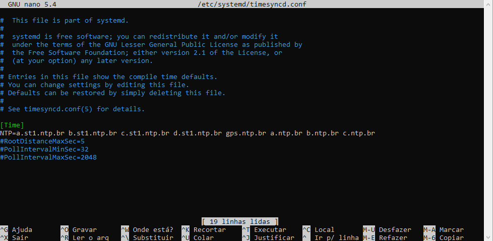
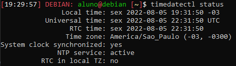
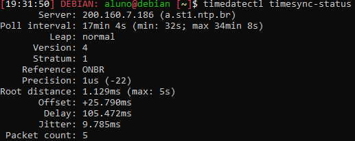
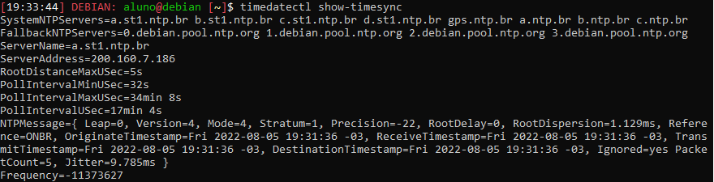

SINCRONIZAÇÃO DE RELÓGIO:
Para fazer a sincronização de relógio foi utilizado o projeto do nic.br com
o Network Time Protocol. Com isso foi utilizado os seguintes comandos na VM
192.168.1.32:
sudo apt-get install systemd-timesyncd
Após a instalação deste sistema foi necessário configurar seu arquivo, podendo
acessá-lo através do comando:
sudo nano /etc/systemd/timesyncd.conf
Ao acessar o arquivo, deve-se alterá-lo para cliente NTP com:
Máquina 32 (servidor da máquina 33/cliente do nic.br):
[Time]
NTP=a.st1.ntp.br b.st1.ntp.br c.st1.ntp.br d.st1.ntp.br gps.ntp.br a.ntp.br
b.ntp.br c.ntp.br

Máquina 33 (cliente da máquina 32):
[Time]
NTP=192.168.1.32
Feito isso, basta ativar o serviço:
sudo timedatectl set-ntp true
sudo service systemd-timesyncd restart
Verificando o funcionamento:
timedatectl status

timedatectl timesync-status

timedatectl show-timesync

Servidor Web:
Para criar o servidor web é necessária a instalação
do Apache2 na máquina virtual, no qual foi utilizada
a máquina 32 (IP 192.168.1.32). Sendo assim é possível
fazer requisições HTTP através da pesquisa web do endereço
IP, já que não foi configurada um servidor DNS.
sudo apt-get update
sudo apt-get install apache2
Com o Apache2 instalado é necessário configurar a página
HTML, entrando em seu arquivo pelo comando:
sudo nano /var/www/html/index.html
Para inserir algum arquivo é necessário o comando:
scp ‘nomeDoArquivo’ aluno@192.168.1.32:~
Link para Relatório parte 2